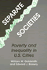
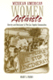
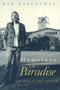

|
Conspicuous
Production
Automobiles and Elites in Detroit, 1899-1933
Davis,
Donald Finlay
Wallace K. Ferguson Prize, the Canadian Historical Association,
1989 |

|
Something
Left to Lose
Personal Relations and Survival among New York's Homeless
Dordick,
Gwendolyn A.
Outstanding Academic Title, Choice, 1997 |

|
There Goes the 'Hood
Views of Gentrification from the Ground Up
Freeman, Lance
Winner of the Urban Affairs Association Best Book Award, 2007 |

|
Rethinking
Rental Housing
Gilderbloom,
John I. and Richard P. Appelbaum, foreword by Joe R. Feagin
Robert E. Park Award, American Sociological Association,
1989 |

|
Separate
Societies
Goldsmith,
William W. and Edward J. Blakely, foreword by Harvey Gantt
Paul Davidoff Award, Association of Collegiate Schools of
Planning, 1993 |

|
Reshaping
Ethnic and Racial Relations in Philadelphia
Immigrants in a Divided City
Goode,
Judith and Jo Anne Schneider
Finalist for the Robert E. Park Award, Community and Urban
Section of the American Sociological Association, 1996 |

|
Second Cities
Globalization and Local Politics in Manchester and Philadelphia
Hodos, Jerome I.
Kenneth Jackson Best Book Award from the Urban History Association, 2011 Outstanding Academic Title, Choice, 2012 |
|
Making a Global Immigrant Neighborhood
Brooklyn's Sunset Park
Hum, Tarry
Honorable Mention from the Association of Collegiate Schools of Planning's Paul Davidoff Award, 2015
|

|
Beyond Preservation
Using Public History to Revitalize Inner Cities
Hurley, Andrew
National Council on Public History's Book Award Award, 2012 |

|
Model City Blues
Urban Space and Organized Resistance in New Haven
Jackson, Mandi Isaacs
Urban Communication Foundation Jane Jacobs Urban Communication Publication Award, 2008 |

|
Newcomers
in Workplace
Immigrants and the Restructing of the U.S. Economy
edited
by Lamphere, Louise, Alex Stepick and Guillermo Grenier
Conrad Arensberg Award, American Anthropological Association,
1994 |

|
The Death and Life of the Single-Family House
Lessons from Vancouver on Building a Livable City
Lauster, Nathanael
Canadian Sociological Association's John Porter Tradition of Excellence Book Award, 2017
|

|
Mexican
American Women Activists
Identity and Resistance in Two Los Angeles Communities
Pardo,
Mary
Honorable Mention for Outstanding Books Awards, Gustavus
Myers Center for the Study of Bigotry and Human Rights in
North America, 1999 |

|
Homeless
in Paradise
A Map of the Terrain
Rosenthal,
Rob
Co-winner of the Association for Humanist Sociology Book
Award, 1995 |

|
Brooklyn!
An Illustrated History
Snyder-Grenier,
Ellen M.
New York Society Library's New York City Book Award for Best
Book, 1996 |

|
Mobilizing an Asian American Community
Võ, Linda
Trinh
Social Science Book Honorable Mention, Association for Asian American
Studies, 2006 |